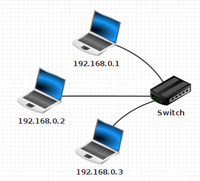
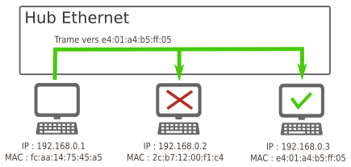
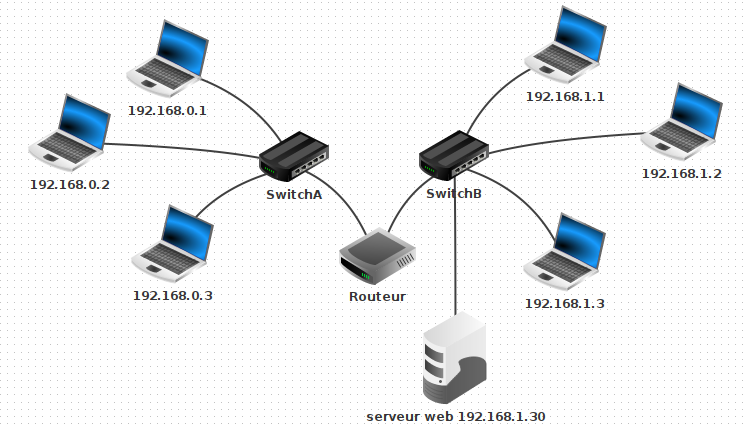
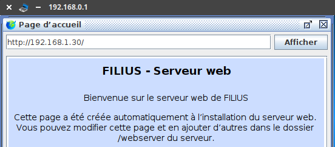
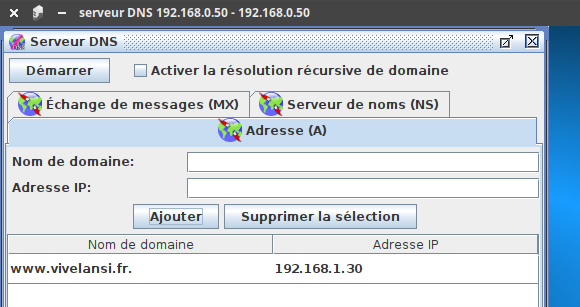

3.1 Architecture d'un réseau⚓︎

Ce cours a pour but de présenter la constitution classique d'un réseau, et les équipements associés. La partie relative aux protocoles utilisés lors des échanges entre deux machines est détaillée dans le cours sur les protocoles de communication.
Téléchargez les fichiers Filius ici
1. Premier réseau local⚓︎
Au sein du logiciel Filius, créons le réseau local ci-dessous :

Testons le ping de la machine 192.168.0.1 vers la machine 192.168.0.3.
Résultat du ping

1.1. La carte réseau et son adresse MAC⚓︎
Chaque ordinateur sur le réseau dispose d'une adresse MAC, qui une valeur unique attribuée à sa carte réseau (Ethernet, Wifi, 4G, 5G, ...) lors de sa fabrication en usine.
Cette adresse est codée sur 48 bits, présentés sous la forme de 6 octets en hexadécimal. Exemple : fc:aa:14:75:45:a5
Les trois premiers octets correspondent au code du fabricant. Un site comme https://www.macvendorlookup.com/ vous permet de retrouver le fabricant d'une adresse MAC quelconque.
1.2. Switch, hub, quelle différence ?⚓︎
- Au sein d'un hub Ethernet (de moins en moins vendus), il n'y a aucune analyse des données qui transitent : il s'agit simplement d'un dédoublement des fils de cuivre (tout comme une multiprise électrique). L'intégralité des messages est donc envoyée à l'intégralité des ordinateurs du réseau, même s'ils ne sont pas concernés.

- Au sein d'un switch Ethernet , une analyse est effectuée sur la trame qui est à distribuer (voir ici. Lors d'un branchement d'un nouvel ordinateur sur le switch, celui-ci récupère son adresse MAC, ce qui lui permet de trier les messages et de ne les distribuer qu'au bon destinataire.

2. Un deuxième sous-réseau⚓︎
Rajoutons un deuxième sous-réseau de la manière suivante (penser à bien renommer les switchs).

Comment relier ces deux sous-réseaux ?
Une réponse pas si bête : avec un cable entre les deux switchs !

Testons cette hypothèse en essayant de pinger la machine 192.168.1.2 depuis la machine 192.168.0.1.
Résultat du ping
 Cela ne marche pas. L'ordinateur refuse d'envoyer le ping vers la machine
Cela ne marche pas. L'ordinateur refuse d'envoyer le ping vers la machine 192.168.1.2.
(spoil : car elle n'est pas dans son sous-réseau)
Temporairement, renommons la machine 192.168.1.2 en 192.168.0.33. Testons à nouveau le ping depuis la machine 192.168.0.1.
Résultat du ping
 Cela marche. Les paquets sont bien acheminés.
Cela marche. Les paquets sont bien acheminés.
Intuition : la notion de sous-réseau n'est pas topologique («il suffit de relier les ordinateurs entre eux») mais obéit à des règles numériques.
2.1. Notion de masque de sous-réseau⚓︎
Dans Filius, lors de l'attribution de l'adresse IP à une machine, une ligne nous permet de spécifier le masque de sous-réseau (appelé simplement « Masque » dans Filius). C'est ce masque qui va permettre de déterminer si une machine appartient à un sous-réseau ou non, en fonction de son adresse IP.
2.1.1 Explication basique⚓︎
- Si le masque est
255.255.255.0, toutes les machines partageant les mêmes trois premiers nombres de leur adresse IP appartiendront au même sous-réseau. Comme ceci est le réglage par défaut de Filius, cela explique pourquoi192.168.0.33et192.168.0.1sont sur le même sous-réseau, et pourquoi192.168.1.2et192.168.0.1ne sont pas sur le même sous-réseau.
Dans cette configuration, 256 machines peuvent donc appartenir au même sous-réseau (ce n'est pas tout à fait le cas car des adresses finissant par 0 ou par 255 sont réservées).
- Si le masque est
255.255.0.0, toutes les machines partageant les mêmes deux premiers nombres de leur adresse IP appartiendront au même sous-réseau.
Dans cette configuration, 65536 machines peuvent être dans le même sous-réseau. (car \(256^2=65536\))
Exercice
- Renommons
192.168.0.33en192.168.1.2et modifions son masque en255.255.0.0. - Modifions aussi le masque de
192.168.0.1en255.255.0.0. - Testons le ping de
192.168.0.1vers192.168.1.2.
Résultat du ping
 Cela marche. Les deux machines appartiennent maintenant au même sous-réseau.
Cela marche. Les deux machines appartiennent maintenant au même sous-réseau.
2.1.2 Explication avancée⚓︎
Lorsqu'une machine A veut envoyer un message à une machine B, elle doit déterminer si cette machine :
- appartient au même sous-réseau : auquel cas le message est envoyé directement via un ou plusieurs switchs.
- n'appartient pas au même sous-réseau : auquel cas le message doit d'abord transiter par un routeur (voir 3.)
Quelle opération permet de distinguer cette appartenance à un même sous-réseau ?
Appelons IP_A et IP_B les adresses IP respectives des machines A et B.
Appelons M le masque de sous-réseau.
Nommons & l'opérateur de conjonction entre nombres binaires (voir ici:
Propriété : A et B appartiennent au même sous-réseau ⇔ IP_A & M = IP_B & M
Exemple : considérons trois machines A, B, C d'IP respectives 192.168.129.10, 192.168.135.200 et 192.168.145.1, configurées avec un masque de sous-réseau égal à 255.255.248.0.
| machine A | machine B | machine C | |
|---|---|---|---|
| IP | 192.168.129.10 | 192.168.135.200 | 192.168.145.1 |
| M | 255.255.248.0 | 255.255.248.0 | 255.255.248.0 |
| IP & M | 192.168.128.0 | 192.168.128.0 | 192.168.144.0 |
rappel des règles de calcul :
- pour tout octet
x,x & 255 = xetx & 0 = 0. 129 & 248s'écrit en binaire10000001 & 11111000qui vaut10000000, soit128en décimal.135 & 248s'écrit en binaire10000111 & 11111000qui vaut10000000, soit128en décimal.
Conclusion : les machines A et B sont sous le même sous-réseau, mais pas la machine C.
2.1.3 Cohérence entre les deux explications⚓︎
Lorsqu'un masque de sous-réseau est égal à 255.255.255.0, l'opération de conjonction & avec chaque IP ne laissera intacts que les 3 premiers octets, le dernier sera égal à 0. Donc si deux adresses s'écrivent A.B.C.X et A.B.C.Y, elles appartiendront forcément au même sous-réseau (typiquement, c'est le cas de 192.168.0.33 et 192.168.0.1).
2.2 Écriture des masques de sous-réseau : notation CIDR⚓︎
D'après ce qui précède, 2 informations sont nécessaires pour déterminer le sous-réseau auquel appartient une machine : son IP et le masque de sous-réseau. Une convention de notation permet d'écrire simplement ces deux renseignements : la notation CIDR.
Exemple : Une machine d'IP 192.168.0.33 avec un masque de sous-réseau 255.255.255.0 sera désignée par 192.168.0.33 / 24 en notation CIDR.
Le suffixe / 24 signifie que le masque de sous-réseau commence par 24 bits consécutifs de valeur 1 : le reste des bits (donc 8 bits) est à mis à 0.
Autrement dit, ce masque vaut 11111111.11111111.11111111.00000000 , soit 255.255.255.0.
De la même manière, le suffixe / 16 donnera un masque de 11111111.11111111.00000000.00000000 , soit 255.255.0.0.
Ou encore, un suffixe / 21 donnera un masque de 11111111.11111111.11111000.00000000 , soit 255.255.248.0.
2.2 Exercices⚓︎
3. Un vrai réseau contenant deux sous-réseaux distincts : la nécessité d'un routeur⚓︎
Notre solution initiale (relier les deux switchs par un cable pour unifier les deux sous-réseaux) n'est pas viable à l'échelle d'un réseau planétaire.
Pour que les machines de deux réseaux différents puissent être connectées, on va utiliser un dispositif équipé de deux cartes réseaux, situé à cheval entre les deux sous-réseaux. Ce équipement de réseau est appelé routeur ou passerelle.

3.1 Principe de fonctionnement⚓︎
Imaginons que la machine 192.168.0.1 / 24 veuille communiquer avec la machine 172.16.52.3 / 24.
L'observation du masque de sous-réseau de la machine 192.168.0.1 / 24 nous apprend qu'elle ne peut communiquer qu'avec les adresses de la forme 192.168.0.X / 24, où X est un nombre entre 0 et 255.
Les 3 étapes du routage :
- Lorsque qu'une machine A veut envoyer un message à une machine B, elle va tout d'abord vérifier si cette machine appartient à son réseau local. Si c'est le cas, le message est envoyé par l'intermédiaire du switch qui relie les deux machines.
- Si la machine B n'est pas trouvée sur le réseau local de la machine A, le message va être acheminé vers le routeur, par l'intermédiaire de son adresse de passerelle (qui est bien une adresse appartenant au sous-réseau de A).
- De là, le routeur va regarder si la machine B appartient au deuxième sous-réseau auquel il est connecté. Si c'est le cas, le message est distribué, sinon, le routeur va donner le message à un autre routeur auquel il est connecté et va le charger de distribuer ce message : c'est le procédé (complexe) de routage, qui sera vu en classe de Terminale.
Dans notre exemple, l'adresse 172.16.52.3 n'est pas dans le sous-réseau de 192.168.0.1. Le message va donc transiter par le routeur.

3.2 Illustration avec Filius⚓︎
-
Rajoutons un routeur entre le SwitchA et le SwitchB.

-
Configuration du routeur : L'interface reliée au Switch A doit avoir une adresse du sous-réseau A. On donne souvent une adresse finissant par
254, qui est en quelque sorte la dernière adresse du réseau (en effet l'adresse en255est appelée adresse de broadcast, utilisée pour pinger en une seule fois l'intégralité d'un sous-réseau).
On donne donc l'adresse192.168.0.254pour l'interface reliée au Switch A, et192.168.1.254pour l'interface reliée au Switch B.

Dans l'onglet général, sélectionner « Routage automatique ».
Ainsi configuré notre routeur peut jouer le rôle de passerelle entre les deux sous-réseaux.
Test du ping entre 192.168.0.1 et 192.168.1.2
Cela ne marche pas. La carte réseau refuse d'envoyer les paquets car elle ne sait pas où les envoyer.
Pourquoi cet échec ? Parce que nous devons dire à chaque machine qu'une passerelle est maintenant disponible pour pouvoir sortir de son propre sous-réseau. Il faut donc aller sur la machine 192.168.0.1 et lui donner l'adresse de sa passerelle, qui est 192.168.0.254.

Attention, il faut faire de même pour 192.168.1.2 (avec la bonne passerelle...)
Testons à nouveau le ping... Cette fois cela marche.
Plus intéressant : effectuons un traceroute entre 192.168.0.1 et 192.168.1.2.

On y aperçoit que la machine 192.168.1.2 est atteignable en deux sauts depuis 192.168.0.1, en passant par la passerelle 192.168.0.254
Cas d'un réseau domestique
Chez vous, la box de votre opérateur joue simultanément le rôle de switch et de routeur :
- switch car elle répartit la connexion entre les différents dispositifs (ordinateurs branchés en ethernet, smartphone en wifi, tv connectée...)
- routeur car elle fait le lien entre ce sous-réseau domestique (les appareils de votre maison) et le réseau internet.

L'image ci-dessous présente le résultat de la commande ipconfig sous Windows. On y retrouve l'adresse IP locale 192.168.9.103, le masque de sous-réseau 255.255.255.0 et l'adresse de la passerelle 192.168.9.1.

3.3 Annexe : rajout d'un serveur DNS⚓︎
3.3.1 Rajout d'un serveur web⚓︎
-
Connectons un ordinateur au SwitchB, sur l'adresse
192.168.1.30et installons dessus un Serveur web et démarrons-le.  -
Sur la machine
192.168.0.1, rajoutons un Navigateur Web. En tapant dans la barre d'adresse l'adresse IP du Serveur web, la page d'accueil de Filius s'affiche.

Lors d'une utilisation classique d'un navigateur web, c'est une url mémorisable qui s'affiche, et non une adresse IP : on retient en effet plus facilement https://www.google.com/ que http://142.250.178.131, qui renvoient pourtant à la même adresse (en tout cas au moment de l'écriture de ce cours).
La machine qui assure ce rôle d'annuaire entre les serveurs web et leur adresse IP s'appelle un serveur DNS. Pour pouvoir indexer la totalité des sites internet, son rôle est structuré de manière hiérarchique. Vous trouverez des détails ici
3.3.1 Rajout d'un serveur DNS⚓︎
- Rajoutons un serveur DNS minimal, qui n'aura dans son annuaire d'un seul site. Il faut pour cela raccorder une nouvelle machine (mais une machine déjà sur le réseau aurait très bien pu jouer ce rôle), et installer dessus un serveur DNS.

-
Sur ce serveur DNS, associons l'adresse
http://www.vivelansi.frà l'adresse IP192.168.1.30.
 -
De retour sur notre machine
192.168.0.1, spécifions maintenant l'adresse du serveur DNS :

-
Depuis le navigateur web de la machine
192.168.0.1, le sitehttp://www.vivelansi.frest maintenant accessible.

Des vidéos pour vous aider à comprendre⚓︎
- PAN, LAN, MAN, WAN : l'essentiel en 4 minutes
- Adresses IP : comprendre l'essentiel en 7 minutes
- Réseaux : adresse IP et masques de sous-réseaux
- Comprendre le DNS en 5 minutes
Bibliographie
- Numérique et Sciences Informatiques, 1re, T. BALABONSKI, S. CONCHON, J.-C. FILLIATRE, K. NGUYEN, éditions ELLIPSES.
- Cours d'OpenClassrooms :